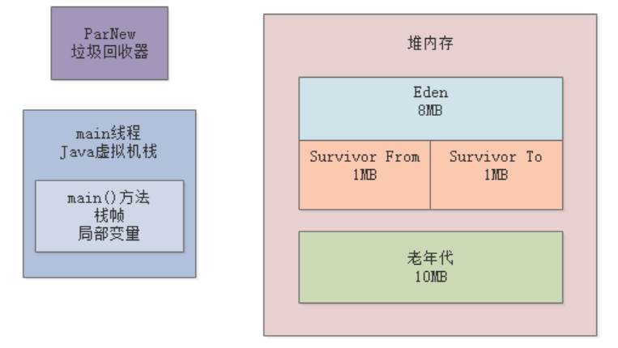
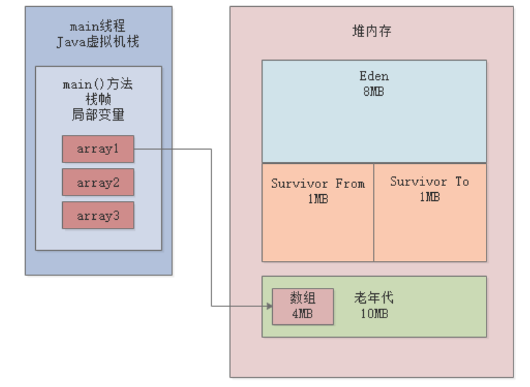
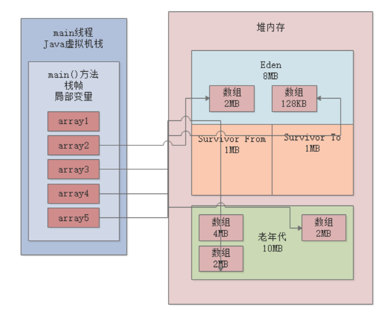
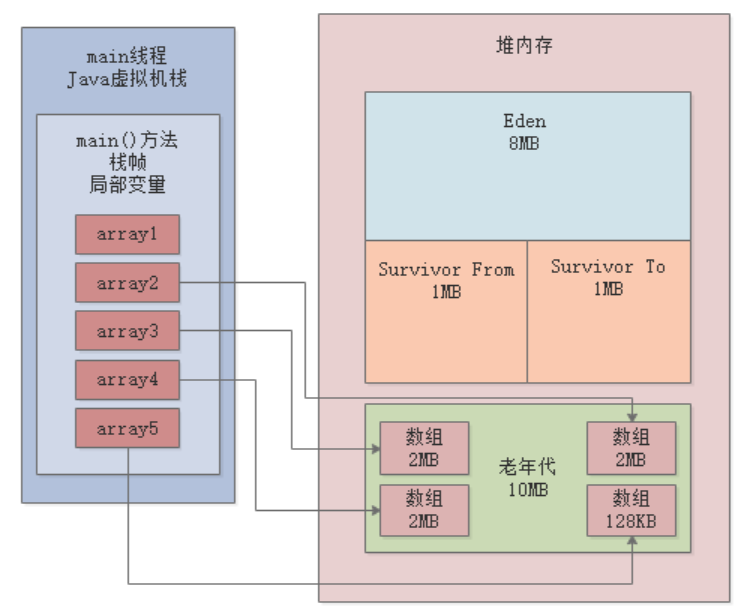
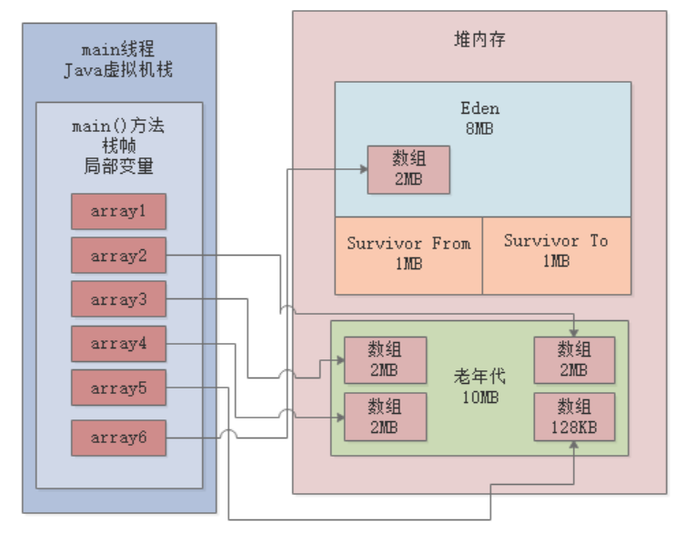

JVM实战（18）——模拟Full GC
一、简介
上一章，我们已经进行了一次对象晋升的模拟，本章我们将继续结合代码示例做实验，来看看老年代的GC是如何触发的。
1.1 JVM内存参数
我们的示例程序基于JDK1.8，JVM参数如下：-XX:NewSize=10485760 -XX:MaxNewSize=10485760 -XX:InitialHeapSize=20971520 -XX:MaxHeapSize=20971520 -XX:SurvivorRatio=8 -XX:MaxTenuringThreshold=15 -XX:PretenureSizeThreshold=3145728 -XX:+UseParNewGC -XX:+UseConcMarkSweepGC -XX:+PrintGCDetails -XX:+PrintGCTimeStamps -Xloggc:gc.log
上述给新生代分配了10MB空间，老年代也是10MB，参数注意一点：
- -XX:PretenureSizeThreshold=3145728：超过3MB的大对象直接进入老年代

二、示例程序
2.1 程序源码
示例程序代码如下：
public class Demo1 {
public static void main(String[] args) {
byte[] array1 = new byte[4 * 1024 * 1024];
array1 = null;
byte[] array2 = new byte[2 * 1024 * 1024];
byte[] array3 = new byte[2 * 1024 * 1024];
byte[] array4 = new byte[2 * 1024 * 1024];
byte[] array5 = new byte[128 * 1024];
byte[] array6 = new byte[2 * 1024 * 1024];
}
}
2.2 JVM内存模型
我们根据上述代码来分析下内存中的对象分配。首先创建4MB的数组对象，由于超过大对象阈值3MB，所以直接进入老年代：

接着array1失去引用，然后在Eden区分配3个2MB数组和1个128KB数组：

然后，执行代码byte[] array6 = new byte[2 * 1024 * 1024]，希望在Eden区继续创建一个2MB的数组。显然，Eden区的空间不足了，此时即将触发Young GC。
2.3 程序执行
我们执行程序，得到以下GC日志：
0.260: [GC (Allocation Failure) 0.261: [ParNew (promotion failed): 8142K->8797K(9216K), 0.0035404 secs]0.264: [CMS: 8194K->6772K(10240K), 0.0064863 secs] 12238K->6772K(19456K), [Metaspace: 3227K->3227K(1056768K)], 0.0103195 secs] [Times: user=0.01 sys=0.00, real=0.01 secs]
0.272: [GC (CMS Initial Mark) [1 CMS-initial-mark: 6772K(10240K)] 9112K(19456K), 0.0004078 secs] [Times: user=0.00 sys=0.00, real=0.00 secs]
0.273: [CMS-concurrent-mark-start]
0.274: [CMS-concurrent-mark: 0.001/0.001 secs] [Times: user=0.00 sys=0.00, real=0.00 secs]
0.274: [CMS-concurrent-preclean-start]
0.274: [CMS-concurrent-preclean: 0.000/0.000 secs] [Times: user=0.00 sys=0.00, real=0.00 secs]
0.274: [CMS-concurrent-abortable-preclean-start]
Heap
par new generation total 9216K, used 2422K [0x00000000fec00000, 0x00000000ff600000, 0x00000000ff600000)
eden space 8192K, 29% used [0x00000000fec00000, 0x00000000fee5d898, 0x00000000ff400000)
from space 1024K, 0% used [0x00000000ff500000, 0x00000000ff500000, 0x00000000ff600000)
to space 1024K, 0% used [0x00000000ff400000, 0x00000000ff400000, 0x00000000ff500000)
concurrent mark-sweep generation total 10240K, used 6772K [0x00000000ff600000, 0x0000000100000000, 0x0000000100000000)
Metaspace used 3233K, capacity 4496K, committed 4864K, reserved 1056768K
class space used 350K, capacity 388K, committed 512K, reserved 1048576K
三、日志分析
我们先来看下日志中的下面这行，这是本轮GC情况的概要说明：
0.260: [GC (Allocation Failure) 0.261: [ParNew (promotion failed): 8142K->8797K(9216K), 0.0035404 secs]0.264: [CMS: 8194K->6772K(10240K), 0.0064863 secs] 12238K->6772K(19456K), [Metaspace: 3227K->3227K(1056768K)], 0.0103195 secs] [Times: user=0.01 sys=0.00, real=0.01 secs]
ParNew (promotion failed): 8142K->8797K(9216K), 0.0035404 secs：：这行表明ParNew首先进行了一次Young GC，但是发现Eden区内的对象全部被引用着，一个都回收不掉。于是会尝试将存活对象转移到Survivor，是Survivor空间不足，所以又会尝试转移到老年代，但是老年代可用空间也只有6MB，容纳不了3个2MB和1个128KB数组，所以就会触发下面的Full GC。
[CMS: 8194K->6772K(10240K), 0.0064863 secs] 12238K->6772K(19456K), [Metaspace: 3227K->3227K(1056768K)], 0.0103195 secs：从这里可以看到，CMS垃圾回收器执行了Full GC，Full GC会对老年代进行Old GC，并是和上面的Young GC关联的，同时还会对元数据区（永久代）进行回收。
因为，老年代虽然容纳不了全部3个2MB数组和1个128KB数组，但是可以容纳2个2MB数组，所以会先将这两个2MB数组对象转移到老年代：

然后，发现剩下的一个2MB数组和128KB数组实在放不下了，就会进行一次Old GC（[CMS: 8194K->6772K(10240K), 0.0064863 secs] ），可以看到老年代空间最终变成了6772KB。
因为CMS进行Old GC时先对老年代清理，回收掉没有引用的那个4MB数组，然后将新生代中的2MB数组和128KB数组转移到老年代：

最后，Full GC完毕后，byte[] array6 = new byte[2 * 1024 * 1024]这行代码对应的2MB数组被成功分配到Eden区：

四、总结
本章通过GC日志分析了一个触发老年代GC的案例，即新生代存活对象太多，放不进Survivor区，同时也放不进老年代，此时就会触发CMS的Full GC。
当然，触发老年代GC的另一种情况就是：当老年代内存占用达到一定的比例，通过 -XX:CMSInitiatingOccupancyFaction参数可以设置这个比例，JDK1.6中默认是92%。